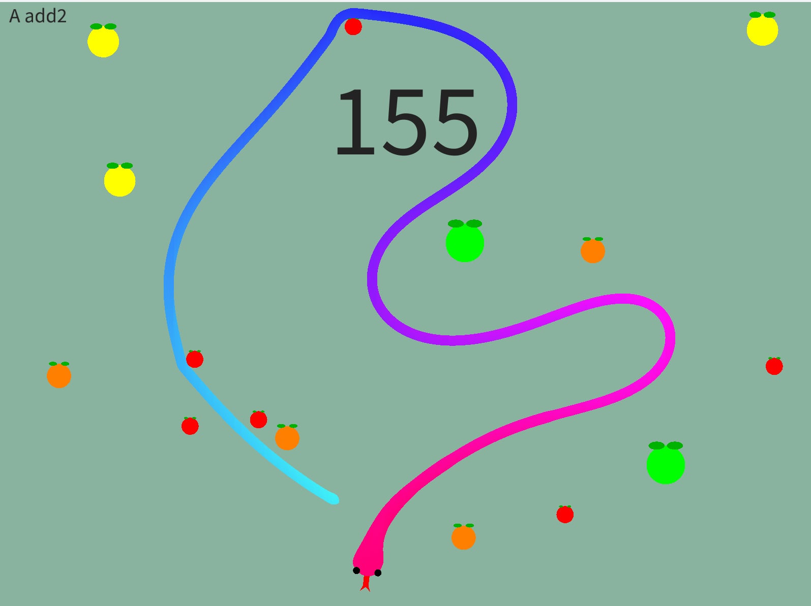
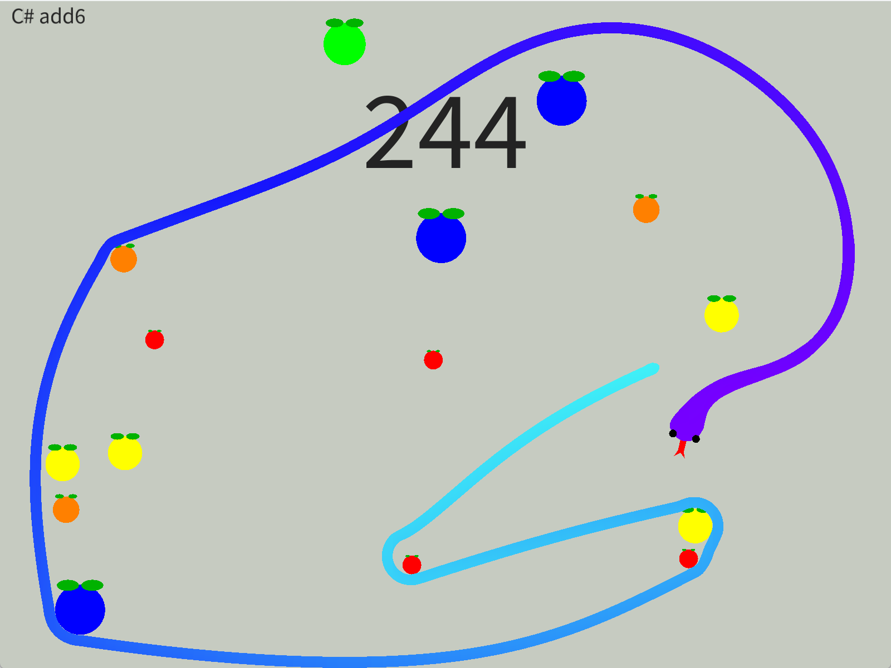

Snake
- Period
- August 2025 - Present
(2 months) - Tools
- Processing
- Team size
- 1
- Role(s)
- Full Developer
Programmer
Designer
Project Summary
What I learned in this project:
- Procedural animation and real-time object control.
- Collision logic and game state management.
- Procedural music generation based on music theory and probabilistic algorithms.

During the summer I started developing a project to experiment with procedural animation, creating a simple controller for a snake that moved across the screen. Later, I implemented the basic mechanics of the classic game Snake, increasing the length of the snake when eating fruits and restarting the game when it collided with itself.

Afterwards, I decided to implement a procedural music system, combining two of my main interests: music and procedural content generation. This system generates chords so that the next chord is consonant with the current one, based on probability and concepts such as the circle of fifths.